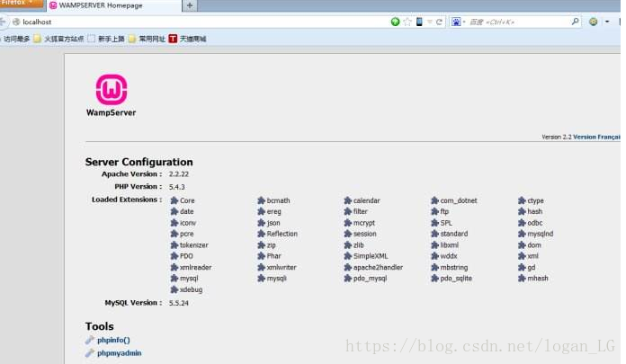
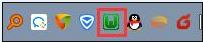
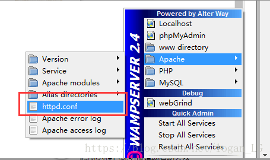
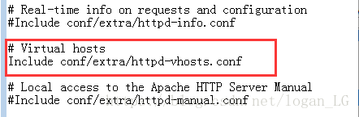
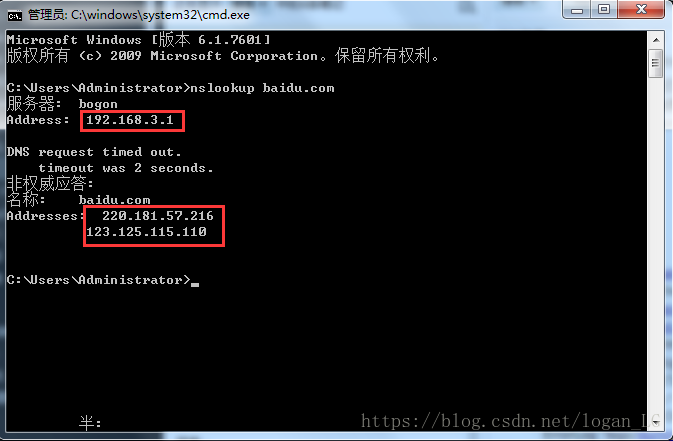
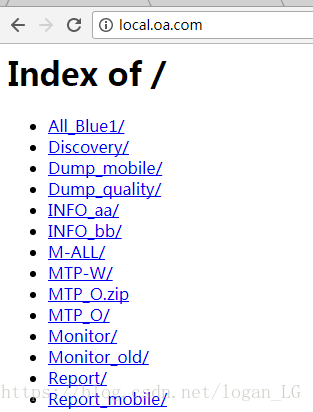

windows通过wamp apache实现代理及反向代理

wamp是一款基于windows平台的AMP（Apache/MySQL/PHP）集成软件。安装和使用都非常简便，可以让我们避免由于缺乏AMP的知识而无法正确设置环境。
下载安装：
首先可以到官网下载合适版本的wampServer下载，双击安装，这是一个全自动化的过程，一直点next就行了，不多做解释。
官网地址：http://www.wampserver.com/en/
安装后双击应用图标开启服务，在浏览器地址栏中输入localhost并访问出现如下界面说明已正确安装

如果下图中的图标为橙色说明报错或启动失败，绿色说明正常启动

配置：
首先打开apache的配置文件httpd.conf，去掉#Include conf/extra/htttpd-vhosts.conf前面的#号以开启虚拟主机功能


（你也可以在wamp安装目录的路径下找到httpd.conf文件，比如我的路径是D:\wamp\bin\apache\Apache2.4.4\conf）
接下来打开httpd-vhosts.conf文件，将下面的配置信息添加到文件的最后面即可
<VirtualHost *:80>
ServerAdmin webmaster@dummy-host2.example.com
DocumentRoot "D:/my_project"
ServerName local.oa.com
ServerAlias local.all.oa.com test.oa.com
ErrorLog "logs/dummy-host2.example.com-error.log"
CustomLog "logs/dummy-host2.example.com-access.log" common
<Directory "D:/my_project/">
ProxyPass / http://10.121.104.134/cgi-bin
ProxyPassReverse / http://10.121.104.134/cgi-bin
ProxyPreserveHost On
Options Indexes FollowSymLinks Includes
AllowOverride All
Order Deny,Allow
Allow from all
</Directory>
</VirtualHost>
配置说明：
1.DocumentRoot：服务器访问的文件根路径，不需要带结尾斜杠
2.
3.ServerName：就是你要代理的域名
4.ServerAlias：代理域名的别名，可以同时添加过个，用空格隔开
5.proxyPass：该指令可以将远程服务器映射到本地服务器的URL空间；本地的服务器并不是扮演传统意义上的代理服务器的角色，而是表现为远程服务器的一个镜像。此本地服务器常被成为反向代理（reversed proxy）或者是网关（gateway）。路径是指本地虚拟路径的名字；url指远程服务器的一个部分URL，不能包含查询字符串。
ProxyPass后面跟的值就是你要代理的URL，但是把域名换成域名ip地址了。那么如何获得域名的ip地址呢？我们拿baidu.com来说。打开windows命令行，执行如下命令：
$ nslookup baidu.com

图中第一个红框中的值是远程服务器的ip地址，而我们要用的是第二个红框中的值，也就是域名的ip地址
6.ProxyReverse： ProxyPassReverse 的配置总是和ProxyPass 一致，
它的作用在于反向代理，如果响应中有302重定向，ProxyPassReverse就派上用场。
举例说明，假设用户访问http://www.test.com/exam.php， 通过转发交给http://192.168.100.22/exam.php 处理，假定exam.php处理的结果是实现redirect到login.php(使用相对路径,即省略了域名信息)，如果没有配置 反向代理，客户端收到的请求响应是重定向操作，并且重定向目的url为 http://192.168.100.22/login.php ， 而这个地址只是代理服务器能访问到的，可想而知，客户端肯定是打不开的，反之如果配置了反向代理，则会在转交HTTP重定向应答到客户端之前调整它为 http://www.test.com/login.php， 即是在原请求之后追加上了redirect的路径。当客户端再次请求 http://www.test.com/login.php， 代理服务器再次工作把其转发到 http://192.168.100.22/login.php。 客户端到服务器称之为正向代理，那服务器到客户端就叫反向代理 httpd.conf 的修改例子, 可以放到VirtualHost节点配置里面
以上ProxyPass和ProxyReserve的解释来自另外一篇博客，有兴趣可以阅读一下，原文链接：https://blog.csdn.net/u011277123/article/details/77165137
还没完，接下来回到httpd.conf文件，找到下面这几行
#LoadModule proxy_module modules/mod_proxy.so
#LoadModule proxy_ajp_module modules/mod_proxy_ajp.so
#LoadModule proxy_balancer_module modules/mod_proxy_balancer.so
#LoadModule proxy_connect_module modules/mod_proxy_connect.so
#LoadModule proxy_express_module modules/mod_proxy_express.so
#LoadModule proxy_fcgi_module modules/mod_proxy_fcgi.so
#LoadModule proxy_ftp_module modules/mod_proxy_ftp.so
#LoadModule proxy_html_module modules/mod_proxy_html.so
#LoadModule proxy_http_module modules/mod_proxy_http.so
#LoadModule proxy_scgi_module modules/mod_proxy_scgi.so
#LoadModule slotmem_shm_module modules/mod_slotmem_shm.so
#LoadModule ssl_module modules/mod_ssl.so
#LoadModule vhost_alias_module modules/mod_vhost_alias.so
去掉每一行前面的#号以加载相应的模块
然后配置好本地的域名：打开C:\Windows\System32\drivers\etc目录下的hosts文件在并在最后面添加下面几行内容
127.0.0.1 local.all.oa.com
127.0.0.1 local.oa.com
127.0.0.1 test.oa.com
保存并退出
重启wampServer，访问local.all.oa.com，local.oa.com，test.oa.com中的任意一个都可以访问到你上面设置好的项目目录（D:/my_project）,效果如下：

接下来就可以正常访问你的项目文件啦。而且项目中的请求也可以转发到上面的指定地址来处理，可以很好解决开发中接口跨域问题。
最后感谢您的阅读，如有意见欢迎评论